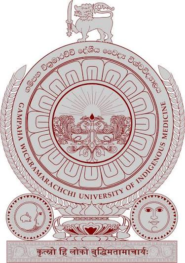

GAMPAHA WICKRAMARACHCHI UNIVERSITY OF INDIGENOUS MEDICINE

HISTORY OF GAMPAHA WICKRAMARACHCHI UNIVERSITY
- 1929: Founded by Ayurveda Chakravarti Pandit GP Wickramarachchi as the Siyane Ayurveda Medical College.
- 1995: Affiliated to the University of Kelaniya as the Gampaha Wickramarachchi Ayurveda Institute (GWAI).
- 2020: Upgraded to a fully independent national university as the 16th university in Sri Lanka.
- Present: Premier national university specializing in Indigenous Medicine, Allied Health, and Technological Studies.
AVAILABLE FACULTIES
- Faculty of Indigenous Medicine – දේශීය වෛද්ය පීඨය
- Faculty of Indigenous Social Science and Management Studies – දේශීය සමාජීය විද්යා හා කළමනාකරණ අධ්යයන පීඨය
- Faculty of Indigenous Health Sciences and Technology – දේශීය සෞඛ්ය විද්යා හා තාක්ෂණ පීඨය
- Faculty of Graduate Studies – පශ්චාත් උපාධි අධ්යයන පීඨය
GO TO OFFICIAL WEBSITE OF GWUIM
GO TO HOME PAGE